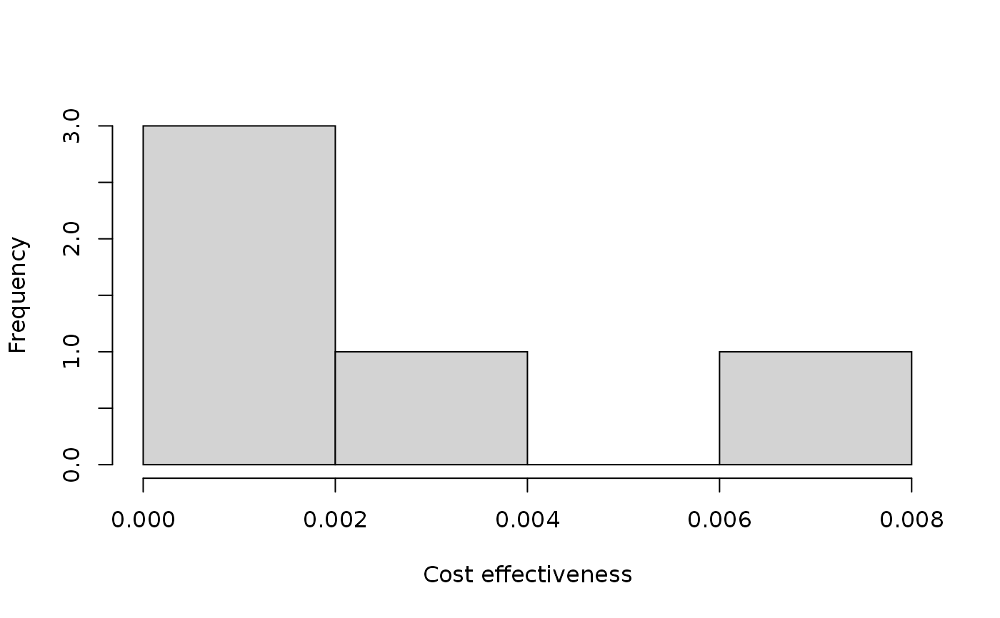

Calculate the individual cost-effectiveness of each conservation project
in a project prioritization problem()
(Joseph, Maloney & Possingham 2009).
project_cost_effectiveness(x)
| x | project prioritization |
|---|
A tibble::tibble() table containing the following
columns:
"project"character name of each project
"cost"numeric cost of each project.
"benefit"numeric benefit for each project. For a
given project, this is calculated as the difference between (i) the
objective value for a solution containing all of the management actions
associated with the project and all zero cost actions, and (ii) the
objective value for a solution containing the baseline project.
"ce"numeric cost-effectiveness of each project.
For a given project, this is calculated as the difference between the
the benefit for the project and the benefit for the baseline project,
divided by the cost of the project. Note that the baseline
project will have a NaN value because it has a zero cost.
"rank"numeric rank for each project according to
is cost-effectiveness value. The project with a rank of one is the
most cost-effective project. Ties are accommodated using averages.
Note that project cost-effectiveness cannot be calculated for problems with minimum set objectives because the objective function for these problems is to minimize cost and not maximize some measure of biodiversity persistence.
Joseph LN, Maloney RF & Possingham HP (2009) Optimal allocation of resources among threatened species: A project prioritization protocol. Conservation Biology, 23, 328--338.
#> # A tibble: 6 x 13 #> name success F1 F2 F3 F4 F5 F1_action F2_action #> <chr> <dbl> <dbl> <dbl> <dbl> <dbl> <dbl> <lgl> <lgl> #> 1 F1_project 0.919 0.791 NA NA NA NA TRUE FALSE #> 2 F2_project 0.923 NA 0.888 NA NA NA FALSE TRUE #> 3 F3_project 0.829 NA NA 0.502 NA NA FALSE FALSE #> 4 F4_project 0.848 NA NA NA 0.690 NA FALSE FALSE #> 5 F5_project 0.814 NA NA NA NA 0.617 FALSE FALSE #> 6 baseline_proj… 1 0.298 0.250 0.0865 0.249 0.182 FALSE FALSE #> # … with 4 more variables: F3_action <lgl>, F4_action <lgl>, F5_action <lgl>, #> # baseline_action <lgl>#> # A tibble: 5 x 2 #> name weight #> <chr> <dbl> #> 1 F1 0.211 #> 2 F2 0.211 #> 3 F3 0.221 #> 4 F4 0.630 #> 5 F5 1.59#> # A tibble: 6 x 4 #> name cost locked_in locked_out #> <chr> <dbl> <lgl> <lgl> #> 1 F1_action 94.4 FALSE FALSE #> 2 F2_action 101. FALSE FALSE #> 3 F3_action 103. TRUE FALSE #> 4 F4_action 99.2 FALSE FALSE #> 5 F5_action 99.9 FALSE TRUE #> 6 baseline_action 0 FALSE FALSE# build problem p <- problem(sim_projects, sim_actions, sim_features, "name", "success", "name", "cost", "name") %>% add_max_richness_objective(budget = 400) %>% add_feature_weights("weight") %>% add_binary_decisions() # print problem print(p)#> Project Prioritization Problem #> actions F1_action, F2_action, F3_action, ... (6 actions) #> projects F1_project, F2_project, F3_project, ... (6 projects) #> features F1, F2, F3, ... (5 features) #> action costs: min: 0, max: 103.22583 #> project success: min: 0.81379, max: 1 #> objective: Maximum richness objective [budget (400)] #> targets: none #> weights: min: 0.21136, max: 1.59167 #> decisions Binary decision #> constraints: <none> #> solver: default# calculate cost-effectiveness of each project pce <- project_cost_effectiveness(p) # print project costs, benefits, and cost-effectiveness values print(pce)#> # A tibble: 6 x 6 #> project cost obj benefit ce rank #> <chr> <dbl> <dbl> <dbl> <dbl> <dbl> #> 1 F1_project 94.4 0.689 0.108 0.00114 4 #> 2 F2_project 101. 0.711 0.130 0.00129 3 #> 3 F3_project 103. 0.665 0.0841 0.000815 5 #> 4 F4_project 99.2 0.858 0.277 0.00279 2 #> 5 F5_project 99.9 1.23 0.653 0.00654 1 #> 6 baseline_project 0 0.581 0 NaN 6